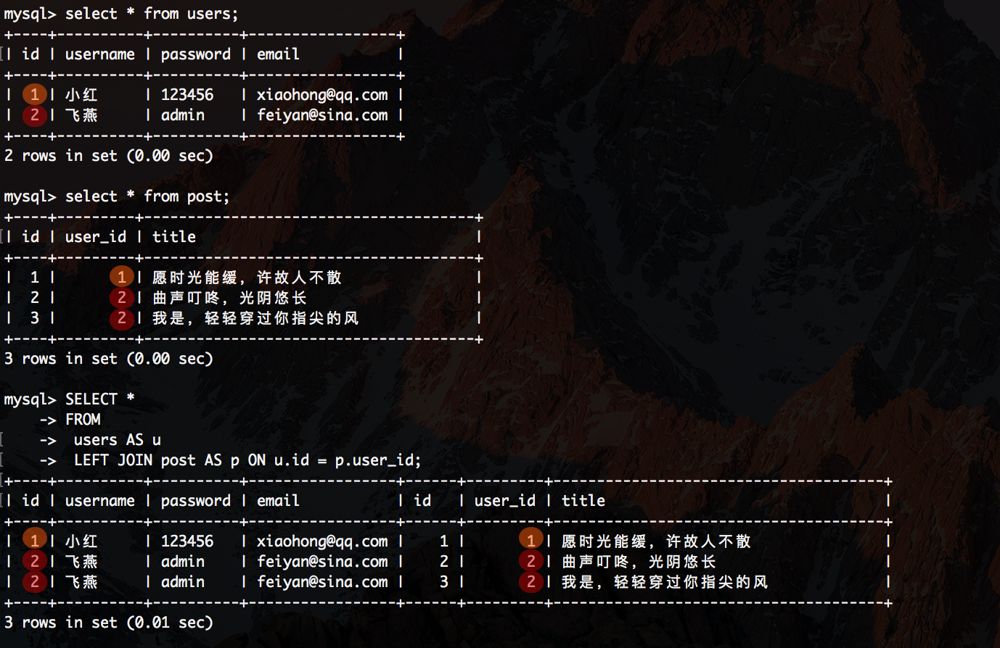

一个简单Spring Boot+MyBatis整合详解(3)
|Spring Boot+MyBatis使用XML进行SQL设置
在示例项目中，使用XML文件替换注释中设置的部分将如下所示
src/main/resources/data.sql
--
-- Table structure for table `users`
--
CREATE TABLE `users` (
`id` INT(11) NOT NULL AUTO_INCREMENT COMMENT '用户名ID' ,
`username` VARCHAR(50) NOT NULL COMMENT '用户名' ,
`password` VARCHAR(255) NOT NULL COMMENT '密码' ,
`email` VARCHAR(100) NOT NULL COMMENT '用户电子邮箱',
PRIMARY KEY (`id`)) ENGINE = InnoDB DEFAULT CHARSET=utf8;
--
-- Dumping data for table `users`
--
INSERT INTO `users` (`id`, `username`, `password`, `email`) VALUES
(1, '小红', '123456', 'xiaohong@qq.com'),
(2, '飞燕', 'admin', 'feiyan@sina.com');
--
-- Table structure for table `post`
--
CREATE TABLE `post` (
`id` int(11) NOT NULL AUTO_INCREMENT COMMENT '文章ID',
`user_id` int(11) NOT NULL COMMENT '所属用户名ID',
`title` varchar(200) NOT NULL COMMENT '标题',
PRIMARY KEY (`id`)) ENGINE=InnoDB DEFAULT CHARSET=utf8;
--
-- Dumping data for table `post`
--
INSERT INTO `post` (`id`, `user_id`, `title`) VALUES
(1, 1, '愿时光能缓，许故人不散'),
(2, 2, '曲声叮咚，光阴悠长'),
(3, 2, '我是，轻轻穿过你指尖的风');
创建数据库mydb，并制定默认的字符集是utf8
mysql> create database mydb DEFAULT CHARSET utf8 COLLATE utf8_general_ci;
Query OK, 1 row affected (0.00 sec)
创建和插入（用户表和文章表）
mysql> use mydb;
Database changed
mysql> CREATE TABLE `users` (
-> `id` INT(11) NOT NULL AUTO_INCREMENT COMMENT '用户名ID' ,
-> `username` VARCHAR(50) NOT NULL COMMENT '用户名' ,
-> `password` VARCHAR(255) NOT NULL COMMENT '密码' ,
-> `email` VARCHAR(100) NOT NULL COMMENT '用户电子邮箱',
-> PRIMARY KEY (`id`)) ENGINE = InnoDB DEFAULT CHARSET=utf8;
Query OK, 0 rows affected (0.02 sec)
mysql> INSERT INTO `users` (`id`, `username`, `password`, `email`) VALUES
-> (1, '小红', '123456', 'xiaohong@qq.com'),
-> (2, '飞燕', 'admin', 'feiyan@sina.com');
Query OK, 2 rows affected (0.01 sec)
Records: 2 Duplicates: 0 Warnings: 0
mysql> CREATE TABLE `post` (
-> `id` int(11) NOT NULL AUTO_INCREMENT COMMENT '文章ID',
-> `user_id` int(11) NOT NULL COMMENT '所属用户名ID',
-> `title` varchar(200) NOT NULL COMMENT '标题',
-> PRIMARY KEY (`id`)) ENGINE=InnoDB DEFAULT CHARSET=utf8;
Query OK, 0 rows affected (0.02 sec)
mysql> INSERT INTO `post` (`id`, `user_id`, `title`) VALUES
-> (1, 1, '愿时光能缓，许故人不散'),
-> (2, 2, '曲声叮咚，光阴悠长'),
-> (3, 2, '我是，轻轻穿过你指尖的风');
Query OK, 3 rows affected (0.00 sec)
Records: 3 Duplicates: 0 Warnings: 0
查询
mysql> select * from users;
+----+----------+----------+-----------------+
| id | username | password | email |
+----+----------+----------+-----------------+
| 1 | 小红 | 123456 | xiaohong@qq.com |
| 2 | 飞燕 | admin | feiyan@sina.com |
+----+----------+----------+-----------------+
2 rows in set (0.00 sec)
mysql> select * from post;
+----+---------+--------------------------------------+
| id | user_id | title |
+----+---------+--------------------------------------+
| 1 | 1 | 愿时光能缓，许故人不散 |
| 2 | 2 | 曲声叮咚，光阴悠长 |
| 3 | 2 | 我是，轻轻穿过你指尖的风 |
+----+---------+--------------------------------------+
3 rows in set (0.00 sec)
mysql> SELECT *
-> FROM
-> users AS u
-> LEFT JOIN post AS p ON u.id = p.user_id;
+----+----------+----------+-----------------+------+---------+--------------------------------------+
| id | username | password | email | id | user_id | title |
+----+----------+----------+-----------------+------+---------+--------------------------------------+
| 1 | 小红 | 123456 | xiaohong@qq.com | 1 | 1 | 愿时光能缓，许故人不散 |
| 2 | 飞燕 | admin | feiyan@sina.com | 2 | 2 | 曲声叮咚，光阴悠长 |
| 2 | 飞燕 | admin | feiyan@sina.com | 3 | 2 | 我是，轻轻穿过你指尖的风 |
+----+----------+----------+-----------------+------+---------+--------------------------------------+
3 rows in set (0.01 sec)
查询截图

如果增加用户状态(字段名)
mysql> ALTER TABLE `users` ADD `status` TINYINT(2) NOT NULL DEFAULT '0' AFTER `email`;
Query OK, 0 rows affected (0.10 sec)
Records: 0 Duplicates: 0 Warnings: 0
查看用户表
mysql> select * from users;
+----+----------+----------+-----------------+--------+
| id | username | password | email | status |
+----+----------+----------+-----------------+--------+
| 1 | 小红 | 123456 | xiaohong@qq.com | 0 |
| 2 | 飞燕 | admin | feiyan@sina.com | 0 |
+----+----------+----------+-----------------+--------+
2 rows in set (0.01 sec)
如果小红的活动状态要改为1
mysql> UPDATE `users` SET `status` = '1' WHERE `users`.`id` = 2;
Query OK, 1 row affected (0.01 sec)
Rows matched: 1 Changed: 1 Warnings: 0
查看小红状态是不是1
mysql> select * from users;
+----+----------+----------+-----------------+--------+
| id | username | password | email | status |
+----+----------+----------+-----------------+--------+
| 1 | 小红 | 123456 | xiaohong@qq.com | 0 |
| 2 | 飞燕 | admin | feiyan@sina.com | 1 |
+----+----------+----------+-----------------+--------+
2 rows in set (0.00 sec)